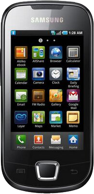

삼성 갤럭시 아폴로
1. 외관

삼성전자가 2010년 6월에 출시한 안드로이드 스마트폰.
2. 사양
| 프로세서 | 삼성 S5P6422 SoC. ARM11 667 MHz CPU | ||
| 메모리 | 256 MB DDR SDRAM, 512 MB 내장 메모리, micro SDHC (최대 32GB 지원) | ||
| 디스플레이 |
3.2인치 WQVGA(240 x 400) RGB 서브픽셀 방식의 TFT-LCD (146 ppi) 정전식 터치 스크린 |
||
| 네트워크 | 기본 | HSDPA & HSUPA & UMTS, GSM & EDGE | Wi-Fi 802.11b/g, 블루투스 2.1+A2DP |
| - | - | ||
| 카메라 | 후면 320만 화소 AF | ||
| 배터리 | Li-lon 1500 mAh | ||
| 운영체제 | 안드로이드 2.1 (Eclair) → 2.2 (Froyo) | ||
| 규격 | 55 x 113.5 x 12.9 mm, 109 g | ||
3. 상세
삼성전자가 출시한 갤럭시 S 이후에 최초로 출시한 안드로이드 스마트폰으로 갤럭시 스피카의 후속작이다. 그리고 삼성이 자사의 ARM11기반의 AP를 탑재한 마지막 스마트폰이기도 하다.
갤럭시 스피카와는 까놓고 말해 디자인과 OS 버전을 제외하고는 별 차이가 없다. 세세하게 들어가면 디스플레이의 해상도가 바뀌고 AP가 바뀌긴 했지만 내장 메모리 용량과 램 용량은 여전히 갤럭시 스피카와 동일하다.
다만, OS가 2.1 이클레어를 탑재했고 전작이 안드로이드 순정 UI를 사용한 반면 이 기기는 터치위즈 3.0을 탑재했다. 후에 2.2 프로요 업그레이드도 진행되었다.